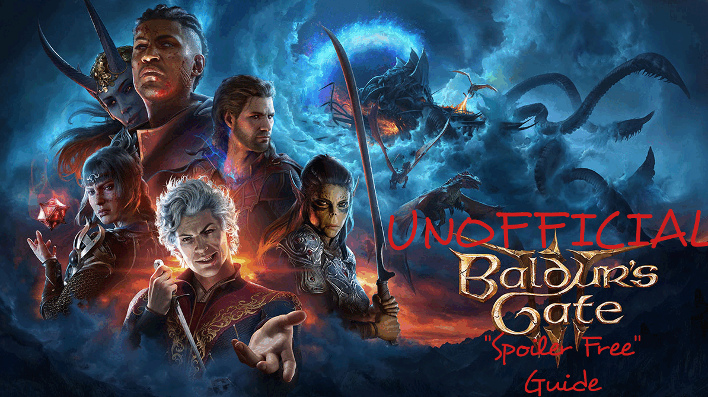

Are you annoyed that you're expected to play through the game 5 times, blindly, as a good character, just to see the basic questlines complete? Are you a save-scummer because your time is valuable? Are you over Reddit's insistence that you should let Gale die just because you failed the random roll? Then this guide is for you. Tasks include the least spoiler-related information possible, although links may include heavy spoilers. After you complete a task, you should recognize it within the list, but probably not before. Check things as you go, and when you reach a door that says "tie up loose ends," you may want to visit the wiki.
This guide has several goals:
It also has several non-goals:
Warning: While it's mitigated as much as possible, this guide *Contains Spoilers!*
This guide began from the helpful Reddit thread here, and uses the Dark Souls checklist format created by Stephen McNabb on the Dark Souls 2 Cheat Sheet, and Xenevel with their updated version. If this is your first time visiting this page please check out the Help section.
If you follow it chronologically, it is like a guide. It assumes you're using your Journal once quests are initiated. However, exact item locations, paths, and routes can be hard to follow with a text guide. This tool also does not guide you through respecs, weapons, recommended spells, or stat allocation.
If you don't follow the exact order of steps in this playthrough, it's possible you could miss important NPC questlines that provide achievements.
Yup, use the profile selector and buttons at the top right of the page to setup multiple characters.
You can view the original updated guide conversation at this Reddit thread or if you know your way about Git/GitHub then fork my repo and submit a pull request.
It gets saved to the local storage in your browser and not to any database or API. So if you are clearing your browser cache make sure not to delete the site data or your checklists will get reset.